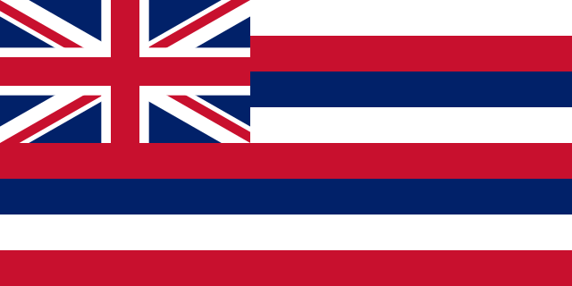
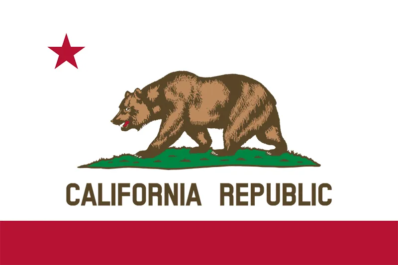

| Alaska |
Alaska is a state located in the Western United States on the northwest extremity of North America. A semi-exclave of the U.S., it borders the Canadian province of British Columbia and the Yukon territory. Alaska is the largest state by land and is home to many different landscapes including glaciers, mountains, and open fields. |
Some fun activities:
|
| Hawaii  |
Hawaii is a state located in the middle of the Pacific Ocean about 2,000 miles from the U.S. mainland. It is the only U.S. state outside North America, the only state that is an archipelago, and the only state geographically located within the tropics. Hawaii is home to many islands with beautiful beaches and scenery. |
Some fun activities:
|
| California  |
California stretches from the Mexican border along the Pacific for nearly 900 miles. Its terrain includes cliff-lined beaches, tall redwood forests, the Sierra Nevada Mountains, Central Valley farmland and the Mojave Desert. The city of Los Angeles is the home of the Hollywood entertainment industry and the hilly San Francisco is known for the Golden Gate Bridge. |
Some fun activities:
|